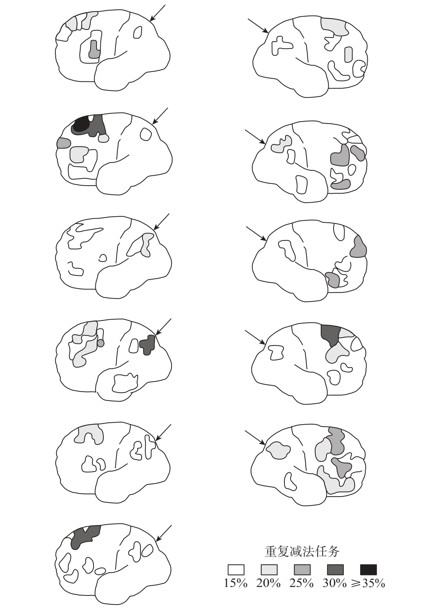
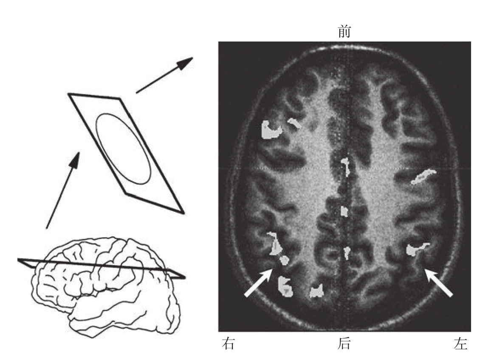

尽管第一张脑部活动的图像可以追溯到20世纪70年代，但是直到1985年，人们才开始对正在计算的脑进行探究。瑞典研究者罗兰（Roland）和弗里贝里（Friberg）在这一年发表的研究结果填补了伦诺克斯的研究遗留下的许多空白6。他们论文的第一句话表明了该研究的框架：
这些实验的目的是证明纯粹的心理活动——思维能够增加脑部血流量，不同类型的思维活动引起不同皮层区域的局部血流量增加。我们认为，思维的最佳定义为：“由清醒状态下的被试所完成的、对内部信息进行操作的脑运作活动。”
为了突出“思维过程”，罗兰和弗里贝里精心控制了被试所进行的任务。其中与我们讨论的内容最为相关的任务是，要求被试对一个数字重复减3（“50-3=47”“47-3=44”，以此类推），计算过程中被试不能发出声音。过一段时间后，实验者打断被试，要求他们报告当前计算出的数字。在整个测验过程中，心理操作以一种纯粹的内部形式进行，不涉及任何可检测到的感觉或肌肉活动。
除了心算任务，另外还有两项任务用于考察空间想象，即在头脑中想象离开家之后交替进行右转和左转时将会走过的路线，以及言语灵活性，即默背一个以不常见的方式排序的词表。将被试执行测试任务时获得的脑部血流量结果与被试处于休息状态、头脑中没有想什么特别的事情时获得的脑部血流量结果进行比较，可以判断出被试在进行每一项任务时处于活动状态的脑区。罗兰和弗里贝里采用了在现在看来已经过时的成像技术，即向被试颈动脉注射放射性氙，然后对单个光子进行探测。这种方法无法达到PET扫描的精确度，仅能够观测到靠近皮层表面区域的局部血流量的增加。
所有11名被试心算时的大脑活动均主要集中于两个脑区：前额叶的大片区域和角回附近的下顶叶区域（见图8-2）。两者在大脑两个半球均出现激活，左半球的激活略强于右半球。

1985年，罗兰和弗里贝里发表了第一张心算时的脑部活动图像。当时他们采用的方法只能一次观测一个大脑半球。每张图代表一个志愿者的数据。与休息状态相比，重复减法任务中，双侧下顶叶皮层（箭头所指位置）和前额叶皮层多个区域均被激活。
图8-2 心算时的脑部活动图像
资料来源：改编自Roland & Friberg, 1985的数据，版权所有©1985 by American Physiological Society。
这个早期的实验在解剖学上的精确度还远远不够。然而，在1994年，当美国国家卫生研究院的工作人员乔丹·格拉夫曼、德尼·勒比昂（Denis Le Bihan），以及他们的同事使用更为精确的fMRI技术，得到了与这一早期的实验一致的结果时7，这个结论的可信度大大提高。格拉夫曼等的实验同样发现，被试在进行重复减法任务时，双侧前额叶和下顶叶皮层均被激活，其中大脑左半球激活的面积大于右半球。我曾作为被试参与了在奥赛（巴黎附近）进行的一个非常类似的预实验。图8-3展示了我在进行重复减法任务时的脑部切片图，双侧顶叶及前额叶激活均清晰可见。

图为重复罗兰和弗里贝里的实验时作者脑部的切片图像。通过高场（3T）fMRI技术，作者在做减法时脑区的活动增强被记录成像，叠加到传统的磁共振解剖结构成像上之后，就可以看到下顶叶皮层（白色箭头）和前额叶皮层的激活。
图8-3 作者做减法时，活动增强的脑区切片图
资料来源：Dehaene, Le Bihan, & van de Moortele, 1996，未发表的数据。
在罗兰和弗里贝里的实验中，执行其他任务的测试结果表明，顶叶和前额叶的激活分别对应任务的不同方面。前额叶的激活不仅出现在心算减法任务中，而且出现在所有与心理操作有关的任务中。罗兰和弗里贝里认为，它在“组织思维”的过程中担任了通用角色。与此相反，下顶叶区域的激活似乎仅限于心算，在空间想象和言语灵活性任务中均没有发现这个区域的激活。这两个研究者认为，下顶叶区域是专属于数学思维的脑区，特别是从记忆中提取减法运算的结果。
罗兰和弗里贝里的实验，在促使科学界关注功能成像的价值方面起到了关键作用。3年后，迈克尔·波斯纳（Michael Posner）、史蒂文·彼得森（Steve Petersen）、彼德·福克斯（Peter Fox）和马库斯·拉希莱（Marcus Raichle）发表的研究结果表明，语言加工过程中，任务的不同方面所激活的脑区不同8。该瑞典小组的实验确实证明了功能成像的新技术能够分离在进行不同的认知任务时人脑激活的差异。然而，我们应该怎样理解研究者们有关“思维”的一般结论？我们是否能够真正在人脑中定位出一个负责“数学思维”的脑区呢？
我个人对罗兰和弗里贝里提出的功能定位将信将疑。这种认为“思维”是“科学研究的有效对象，能够被定位到大脑中的一个小的脑区”的观点，唤起了原本已经被放到博物馆中的一个过时学科的伺机回归：加尔和施普茨海姆的颅相学，即假定大脑由形形色色的器官组成，它们分别负责一个非常复杂的功能，例如“对后代的爱”。颅相学已经被摒弃了一个多世纪。当然，指责脑成像领域的先驱罗兰和他的同事试图复兴颅相学是非常不公平的。然而，不难发现，最近许多脑成像实验都采取了一种“神经颅相学”的模式，它们唯一的目的似乎只是对脑区进行标记。PET被许多研究小组隐讳地当作一种简单的、能够直接揭示负责某种特定功能（例如数学、“思维”甚至意识等）的脑区的成像工具。这种方法假定每个脑区与认知能力之间有清晰的、唯一的联系：计算能力位于下顶叶区域，思维的组织由额叶皮层负责，等等。
然而我们完全有理由相信，大脑并不是以这种方式运行的。哪怕看起来非常简单的功能，也需要很多脑区的协同作用，它们默默无闻地为认知活动提供了生理基础。在被试读词、仔细思考它们的含义、想象一个场景或进行计算时，十几个甚至更多的脑区得到了激活，每一个区域负责一个基本的操作。例如，识别印刷字母，处理它们的发音，或判断一个词的语法范畴。仅靠一个孤立的神经元，或者一个皮层功能柱，甚至一个脑区，都无法单独进行“思考”。只有当遍布整个皮层和皮层下网络的数以百万计的神经元之间相互协作时，人脑才能够实现它令人惊叹的运算能力。那种认为“思维的组织”这样的一般心理过程仅涉及一个单独脑区的观点，现在已经过时了。
那么，我们应该如何对罗兰和弗里贝里的实验结果进行重新解释呢？正如我们在第7章中所看到的，格斯特曼综合征患者的下顶叶区域受损，这种损伤导致M先生失去数感。由于所受的损伤很严重，他甚至无法计算出“3-1”的结果，并且认为7位于2和4之间。由此可见，这一区域可能负责比较单一的加工：把数字符号转化为量的信息以及表征数字的相对大小。它在算术加工中并不担任通用角色，因为这个区域的损伤并没有影响简单算术事实“2+2=4”、代数规则“（a+b）2=a2+2ab+b2”，以及数字在其他百科领域所表达知识（1492=哥伦布发现新大陆的时间）的机械提取。它仅参与对数字的量进行表征的过程，以及确定它们在心理数轴上的位置。普通被试进行重复的减法任务时这一区域的激活，也很好地证明了它在数量加工中的关键作用。
至于瑞典研究小组报告的前额叶的广泛激活，可能包含了很多脑区，它们各自具有不同的功能：对连续运算的顺序进行排序、对它们的执行进行控制，校正错误，抑制言语反应，还有最重要的工作记忆。在前额叶皮层的背外侧区域或是“46区”，神经元负责在没有任何外部输入的情况下，对过去或预期的事件进行即时的保持（比如我们预演拨打某个电话号码）。许多实验支持了这一结论，其中以乔基姆·富斯特（Joachim Fuster）和帕特里夏·戈尔德曼-拉基克（Patricia Goldman-Rakic）的实验最为出色。该实验发现，当猴子将信息持续数秒保持在记忆中时，前额叶皮层的神经元会持续保持放电状态9。罗兰和弗里贝里的3种任务均在很大程度上依赖于这种形式的工作记忆。例如在重复的减法任务中，被试必须随时记住自己计算出的数字，然后随着每一次的减法运算持续更新。这种必需的记忆负荷也许能够解释为什么前额叶回路参与了该任务。